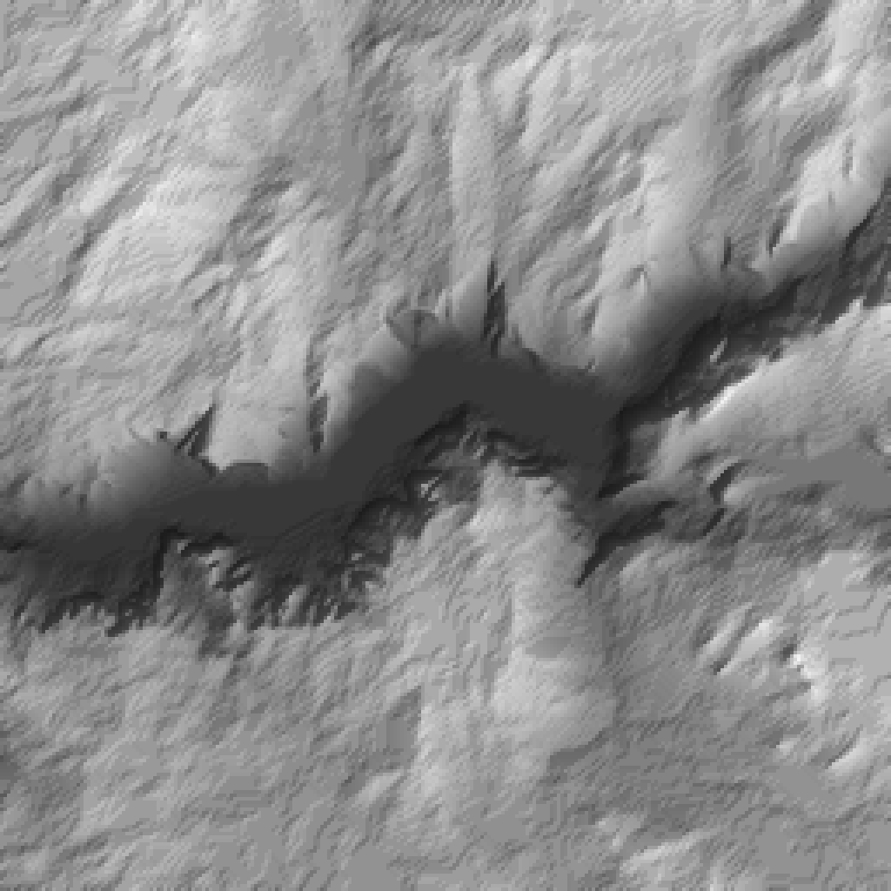
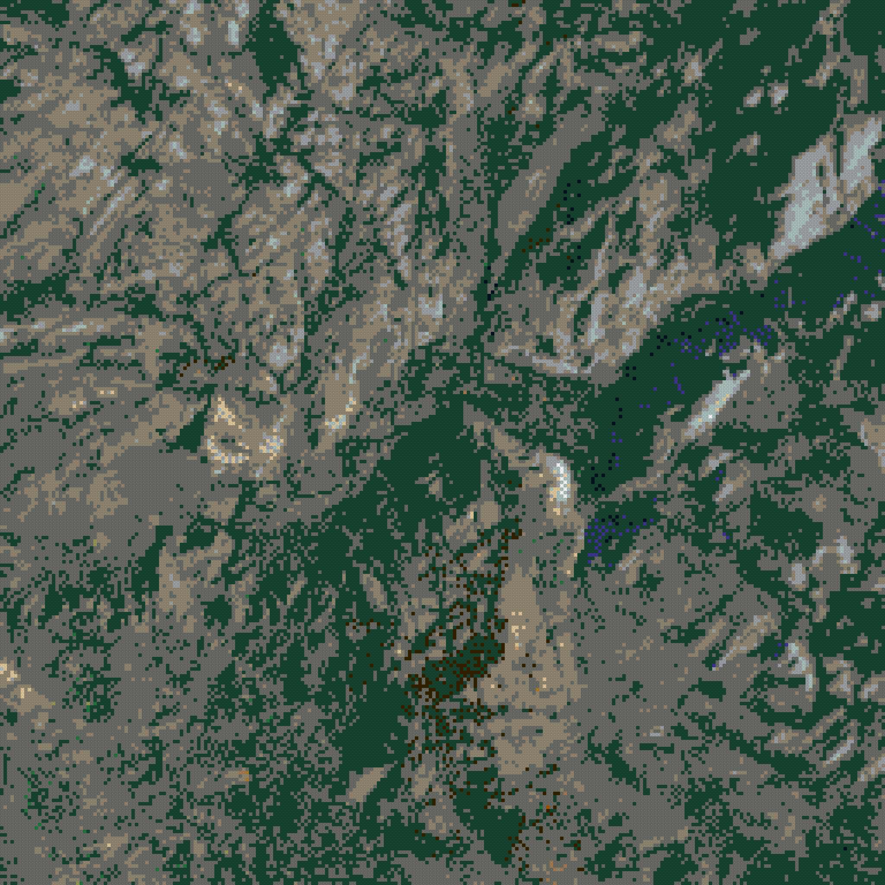
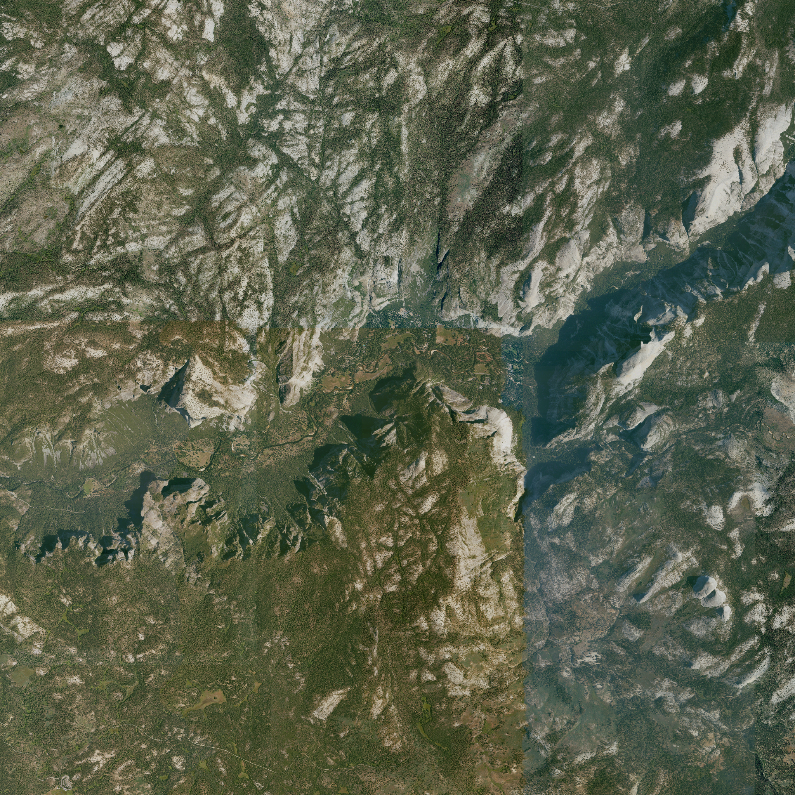

run yosemite-valley-20261001T190139 · generator 0.1.0+3c1a604-dirty · catalog lego-1x1-2026-10-01 · status complete
· variant
max height 64 plates = 204.8 mm · open whole-mountain 3D view



| footprint | 2048.0 × 2048.0 mm (256 × 256 studs) |
|---|---|
| geographic area | 16.00 × 16.00 km, 62.5 m per stud, EPSG:26911 |
| datum | 1164.8 m (raw DEM min 1161.9 m) |
| summit | 2755.5 m stud-mean at stud [228, 187] (source max 2769.8 m) |
| relief above datum | 1590.7 m |
| meters per plate (1×) | 25.000 |
| max height x1.0 | 64 plates / 204.8 mm |
| LDraw 72 | 30596 studs |
| LDraw 288 | 23143 studs |
| LDraw 28 | 8943 studs |
| LDraw 71 | 1725 studs |
| LDraw 308 | 401 studs |
| LDraw 323 | 330 studs |
| LDraw 85 | 126 studs |
| LDraw 19 | 113 studs |
| LDraw 0 | 65 studs |
| LDraw 2 | 50 studs |
| LDraw 84 | 14 studs |
| LDraw 15 | 10 studs |
| LDraw 378 | 7 studs |
| LDraw 330 | 6 studs |
| LDraw 297 | 3 studs |
| LDraw 371 | 2 studs |
| LDraw 78 | 1 studs |
| LDraw 484 | 1 studs |
| role | provider / dataset | date | license · attribution |
|---|---|---|---|
| elevation | USGS 3DEP 3DEPElevation (Bare Earth DEM Dynamic) | None | Public domain USGS 3D Elevation Program (3DEP) |
| imagery | USGS The National Map USGSNAIPPlus (NAIP, latest mosaic) | 2022-08-20 | Public domain USDA FSA NAIP via USGS The National Map |
| PASS | coverage_complete | non-finite DEM px: 0; non-finite imagery px: 0 |
| PASS | dem_imagery_aligned | 2 grids share bounds EPSG:26911; max extent mismatch 0.000 m |
| PASS | every_stud_has_elevation | 65536 studs |
| PASS | every_stud_has_allowed_color | all colors in catalog |
| PASS | no_terrain_below_datum | min plates per exaggeration: {'x1.0': 0} |
| PASS | quant_error_within_half_plate | max |error| plates: {'x1.0': 0.5} |
| PASS | catalog_colors_currently_produced | 18 colors used; not currently produced: [] |
| PASS | terrain_colors_plate_buildable | every used color is produced as a 1x1 plate |
| PASS | summit_position | DEM max in stud (228, 187); highest stud (228, 187); offset 0 stud(s) |
| PASS | exaggeration_invariance | 1 exaggerations share footprint [(256, 256)] and one color array per color setting (colors are computed independently of exaggeration) |
| PASS | viewer_written | 1 whole-mountain 3D viewer(s) |
| PASS | ldraw_valid:x1.0_naip_average_diffusion0.10 | 176808 elements checked |
| PASS | ldraw_seams:x1.0_naip_average_diffusion0.10 | module files together equal the full model |
{
"schemaVersion": 1,
"runId": "yosemite-valley-20261001T190139",
"status": "complete",
"generatorVersion": "0.1.0+3c1a604-dirty",
"createdAt": "2026-10-01T19:01:42+00:00",
"preset": {
"id": "yosemite-valley",
"name": "Yosemite Valley",
"center": {
"lat": 37.735,
"lon": -119.59
},
"boundingBox": {
"widthKm": 16,
"heightKm": 16
},
"targetStudWidth": 256,
"moduleStudSize": 64,
"surfaceResolutionStuds": 1,
"verticalExaggeration": 1,
"datumMode": "surrounding-minimum",
"viewpoints": [
{
"name": "Tunnel View",
"bearingDeg": 254,
"elevationDeg": 10
},
{
"name": "Glacier Point",
"bearingDeg": 109,
"elevationDeg": 30
},
{
"name": "Olmsted Point",
"bearingDeg": 47,
"elevationDeg": 15
}
]
},
"bounds": {
"crs": "EPSG:26911",
"minE": 263769.0,
"minN": 4171572.0,
"maxE": 279769.0,
"maxN": 4187572.0,
"metersPerStud": 62.5,
"studWidth": 256,
"studHeight": 256
},
"scale": {
"metersPerPlateTrueScale": 25.0,
"exaggerations": [
1
]
},
"datum": {
"mode": "surrounding-minimum",
"elevationM": 1164.8102807617188,
"rawDemMinM": 1161.8974609375
},
"sources": [
{
"role": "elevation",
"provider": "USGS 3DEP",
"dataset": "3DEPElevation (Bare Earth DEM Dynamic)",
"sourceUrls": [
"https://elevation.nationalmap.gov/arcgis/rest/services/3DEPElevation/ImageServer/exportImage"
],
"itemIds": [],
"acquisitionDate": null,
"nativeResolutionM": 1.0,
"analysisGridPx": 2560,
"nativeCrs": "EPSG:26911",
"license": "Public domain",
"attribution": "USGS 3D Elevation Program (3DEP)",
"cacheKeys": [
"51a35e6d3fd49687240698a2633aa3b91a68b76123ccae5a99b21186fdef5530",
"99cd1c6f568a12113296073370730108f3c597115a00618584fa80c48bff8e2c",
"b45100c7779c8ce3add6c322c5df34b537a7ecb0f162671ed028c129aead6d88",
"af5b9673b7b919e64ad68116f7da73809b662b1f5bb1489fd8666cb1fb3b8e7d",
"569423da24e462f19b85b5008e1bbe127b970519da43ca4928a1be428cd3eacb",
"55e01d6a970723ab511f3266f8f6bc24957142e6422ccd8f90b5172507807b16",
"f1d03f270bbf73cecdcab2847f43f4fe92ca6ffa625170a59b561af6f8623746",
"f0a8df6d1831029f12a000aa58e9a4f715fca0225e60805e7a4ef1bd4332bce1",
"34cf9ba3ee1634bd33bca55b48b2838cb20c4aa9d79397ef121b31d374e883a4",
"dcb53b774b89fe54242d5b662699e184ee7ad2c30941814b67f5eee3a4a967a3",
"51b66d451e560211374200a19a4eb09ea18458fb7882fd9dc628632bc6f27ddf",
"c37036b9df076d3b98924134b2d91d532a1b4831d32f6f94664b29e848335006",
"76ca1956fce3ef8ec3f68acdfe7dfbdcba86a1412c2fb48010eec556eb2b7329",
"21a6d8ab7393d107019fc8a7e0684ba824e1423c56f0a7cf6962a98707c55b97",
"6df033095f8b510fa649abbc5568a0aced41726e67b894cb4df1077e633df771",
"2c1966d4023375ad6edad6775f69edd27c5dc09a77780a5a9b345378d4127e8b"
]
},
{
"role": "imagery",
"provider": "USGS The National Map",
"dataset": "USGSNAIPPlus (NAIP, latest mosaic)",
"sourceUrls": [
"https://imagery.nationalmap.gov/arcgis/rest/services/USGSNAIPPlus/ImageServer/exportImage"
],
"itemIds": [
"ca_m_3711911_se_11_060_20220812",
"ca_m_3711912_se_11_060_20220820",
"ca_m_3711912_sw_11_060_20220812",
"ca_m_3711913_sw_11_060_20220820",
"ca_m_3711919_ne_11_060_20220807",
"ca_m_3711919_se_11_060_20220807",
"ca_m_3711920_ne_11_060_20220820",
"ca_m_3711920_nw_11_060_20220806",
"ca_m_3711920_se_11_060_20220820",
"ca_m_3711920_sw_11_060_20220806",
"ca_m_3711921_nw_11_060_20220820",
"ca_m_3711921_sw_11_060_20220820"
],
"acquisitionDate": "2022-08-20",
"nativeResolutionM": 0.6,
"analysisGridPx": 3840,
"nativeCrs": "EPSG:26911",
"license": "Public domain",
"attribution": "USDA FSA NAIP via USGS The National Map",
"cacheKeys": [
"6b19f84b0021663ad574583750875cdfa6bfffe440f17e0de0176a314a613613",
"6a362ac4c37b49f8c93f7654417340820886b5875ae00d9b200641928f86d3a0",
"44e5e029b48f9579cca465fc618fd15704aef6ba99a7bc6678e46dd30c711554",
"f52a6eef326309ef71b71dc26a3a3b2636421c2e455b4db671ea17de1da11a6a",
"2bd22771995e23d103576affa2da8c16cb21b1847aefc6c9a65ad8af8361c0c3",
"5a9466ea00f507b8cd2f0a9e3d4023454ff7e0cd38062432f78720ac1a16ab43",
"82076570c41b280525857d6227b1812c4333d070dd0e6d4549e8a4ef9c7a2ada",
"7d316dd658a4c5338886ba0de3d21d509f2e58f1510afc2f00f9a23b6c32c0b3",
"92fc53bade79791f726de03afbd20dd038e0e08adc955f02a0301b4e442e2837",
"27a538485e9a57d1a4839f370ef4886b7fd3a39f517fb9d7171a9279fe39baae",
"b0f4a47400ae4d5e71f9cbce41d3020a3452b36ae211b52c5052ac7a5a0bca72",
"c95841b705dd87580699f3956f95fd3d3e71dec6e7df6152c397606227b29bb0",
"c9376b1cb32cf92fbf7e9a8ce8e6f7b9495aa49a2005fbbf5a6ec1ba1fe618d1",
"a5963be659e9b98d780dc3292c606496328d5b14b921f8de237ec118ac47c760",
"f01e681e477b5cac1f62256f766c17d784b7682835e06560cdbb8fb205101a04",
"b3aaac61017976ffa27b90b1ccede49510472bdd902950233f4ecf0bd26368bc"
],
"imageryKey": "naip",
"notes": [
"acquisition date cross-referenced from Planetary Computer NAIP STAC (12 items, 2022-08-06..2022-08-20)"
]
}
],
"catalog": {
"version": "lego-1x1-2026-10-01",
"sha256": "313a874bc2e3b9a52333454ffbe36a7d309261fd5b5deb0fcd496c8ef2922d2d",
"terrainPalette": {
"rule": "colors currently produced as 1x1 plate (3024)",
"size": 47,
"excluded": []
}
},
"variants": [
{
"key": "x1.0_naip_average_diffusion0.10",
"verticalExaggeration": 1,
"color": {
"imagerySource": "naip",
"imageryDate": null,
"sampling": "average",
"assignment": "diffusion",
"diffusionStrength": 0.1
},
"metrics": {
"maxHeightPlates": 64,
"maxHeightMm": 204.8,
"colorDistribution": {
"0": 65,
"2": 50,
"15": 10,
"19": 113,
"28": 8943,
"71": 1725,
"72": 30596,
"78": 1,
"84": 14,
"85": 126,
"288": 23143,
"297": 3,
"308": 401,
"323": 330,
"330": 6,
"371": 2,
"378": 7,
"484": 1
}
}
}
],
"summary": {
"geographicWidthM": 16000.0,
"geographicHeightM": 16000.0,
"physicalWidthMm": 2048.0,
"physicalDepthMm": 2048.0,
"summitStud": [
228,
187
],
"summitElevationM": 2755.5278369140624,
"summitSourceElevationM": 2769.846923828125,
"reliefM": 1590.7175561523436
},
"outputs": {
"canonical": {
"path": "canonical.npz",
"sha256": "3c72ebfdfe8c180713c959e297927503516473b59aee0b73a0e9382cec83d49d"
},
"preview:height-x1.0": {
"path": "previews/height-x1.0.png",
"sha256": "cb2ce84186388ab5c535cba36305b771ca04075da36b3705929dde1baf8f921e"
},
"preview:color-naip_average_diffusion0.10": {
"path": "previews/color-naip_average_diffusion0.10.png",
"sha256": "9067cec8eafbd2b85ae53997a6267024862932c0588dac4f5e6ac700d9ff5996"
},
"preview:imagery-naip": {
"path": "previews/imagery-naip.png",
"sha256": "f5fb085c97cd996240409b205e321061a9f6598c7f0a0d2a6ca75cb3bdeb17d2"
},
"viewer:x1.0_naip_average_diffusion0.10": {
"path": "viewer/x1.0_naip_average_diffusion0.10.html",
"sha256": "4fa5042f0860bac821bc53b7ac8ce3431f19489224478ff87d415c77a3cc0807"
},
"ldraw:x1.0_naip_average_diffusion0.10:Module_A1": {
"path": "ldraw/x1.0_naip_average_diffusion0.10/Module_A1.ldr",
"sha256": "7476fca512082e8109db795935c9290050182dad74ba9d5244038e7fba991881"
},
"ldraw:x1.0_naip_average_diffusion0.10:Module_A2": {
"path": "ldraw/x1.0_naip_average_diffusion0.10/Module_A2.ldr",
"sha256": "b88fb091317d53fde8bbffc0dde36d9ee61b68e449c49162533fc23b7892848c"
},
"ldraw:x1.0_naip_average_diffusion0.10:Module_A3": {
"path": "ldraw/x1.0_naip_average_diffusion0.10/Module_A3.ldr",
"sha256": "7bf952d23cc41d09bb322845f5efb3f17e388de5fd79cacc7ac2286b92121860"
},
"ldraw:x1.0_naip_average_diffusion0.10:Module_A4": {
"path": "ldraw/x1.0_naip_average_diffusion0.10/Module_A4.ldr",
"sha256": "0a19b5be0501312bea6c410399e0e69186d804ba78c3532a254d95bfad0e53df"
},
"ldraw:x1.0_naip_average_diffusion0.10:Module_B1": {
"path": "ldraw/x1.0_naip_average_diffusion0.10/Module_B1.ldr",
"sha256": "25623cf4e937d48fc549105c27b5431a044a2039968e33c57a6d7b28f651a9ad"
},
"ldraw:x1.0_naip_average_diffusion0.10:Module_B2": {
"path": "ldraw/x1.0_naip_average_diffusion0.10/Module_B2.ldr",
"sha256": "dcd57949f48b96faf22f44e2d00428cdba12c841cd17918d4afcc6589563a280"
},
"ldraw:x1.0_naip_average_diffusion0.10:Module_B3": {
"path": "ldraw/x1.0_naip_average_diffusion0.10/Module_B3.ldr",
"sha256": "4b2e59c765653e58fa06ae2caab72096b1344510239d46a9882286a480afb611"
},
"ldraw:x1.0_naip_average_diffusion0.10:Module_B4": {
"path": "ldraw/x1.0_naip_average_diffusion0.10/Module_B4.ldr",
"sha256": "c05e17d76af0aefc7bc77ee06d9f2cad0a7c8feeac873ac0135e57ba80ef78ff"
},
"ldraw:x1.0_naip_average_diffusion0.10:Module_C1": {
"path": "ldraw/x1.0_naip_average_diffusion0.10/Module_C1.ldr",
"sha256": "a39d06e059b4be2427fe69491ef64a9da33cc197c63f648da80a9ceb74379c75"
},
"ldraw:x1.0_naip_average_diffusion0.10:Module_C2": {
"path": "ldraw/x1.0_naip_average_diffusion0.10/Module_C2.ldr",
"sha256": "e2b31cf1bb13188da09783132e23538f569007d73004e94612e4d00308563488"
},
"ldraw:x1.0_naip_average_diffusion0.10:Module_C3": {
"path": "ldraw/x1.0_naip_average_diffusion0.10/Module_C3.ldr",
"sha256": "57c63c3e20b09b173b8c74ff6b48864ea4588d7d3c0eaaa3cd140da51154904d"
},
"ldraw:x1.0_naip_average_diffusion0.10:Module_C4": {
"path": "ldraw/x1.0_naip_average_diffusion0.10/Module_C4.ldr",
"sha256": "7319adfc591323044f8181525694d3cd3b289cb1bfdf98a3b0d1c81bf97a73b5"
},
"ldraw:x1.0_naip_average_diffusion0.10:Module_D1": {
"path": "ldraw/x1.0_naip_average_diffusion0.10/Module_D1.ldr",
"sha256": "9bea1b19c4370b7813ddfcd5c5a5d5660c6b62618eb161913da5b29efd9290d0"
},
"ldraw:x1.0_naip_average_diffusion0.10:Module_D2": {
"path": "ldraw/x1.0_naip_average_diffusion0.10/Module_D2.ldr",
"sha256": "701865f76519826ee0c2d88aafdb0c3d6bfd6e76b14b86c30a33a7c06b13d353"
},
"ldraw:x1.0_naip_average_diffusion0.10:Module_D3": {
"path": "ldraw/x1.0_naip_average_diffusion0.10/Module_D3.ldr",
"sha256": "f7349b76806e7a416b37ab8aa23369b1274120e025f09f72cfbf21190293773a"
},
"ldraw:x1.0_naip_average_diffusion0.10:Module_D4": {
"path": "ldraw/x1.0_naip_average_diffusion0.10/Module_D4.ldr",
"sha256": "309abc0bef296c50db221e88fbf21a0825c1e3df1f3f69c1b7d206e5cfed3dc1"
},
"ldraw:x1.0_naip_average_diffusion0.10:full": {
"path": "ldraw/x1.0_naip_average_diffusion0.10/Yosemite_Valley.mpd",
"sha256": "056ef52d3323db9037a2de08e8bb7715dcdc5b3a473ea292d4ac316032f9faee"
}
},
"validation": [
{
"check": "coverage_complete",
"passed": true,
"detail": "non-finite DEM px: 0; non-finite imagery px: 0"
},
{
"check": "dem_imagery_aligned",
"passed": true,
"detail": "2 grids share bounds EPSG:26911; max extent mismatch 0.000 m"
},
{
"check": "every_stud_has_elevation",
"passed": true,
"detail": "65536 studs"
},
{
"check": "every_stud_has_allowed_color",
"passed": true,
"detail": "all colors in catalog"
},
{
"check": "no_terrain_below_datum",
"passed": true,
"detail": "min plates per exaggeration: {'x1.0': 0}"
},
{
"check": "quant_error_within_half_plate",
"passed": true,
"detail": "max |error| plates: {'x1.0': 0.5}"
},
{
"check": "catalog_colors_currently_produced",
"passed": true,
"detail": "18 colors used; not currently produced: []"
},
{
"check": "terrain_colors_plate_buildable",
"passed": true,
"detail": "every used color is produced as a 1x1 plate"
},
{
"check": "summit_position",
"passed": true,
"detail": "DEM max in stud (228, 187); highest stud (228, 187); offset 0 stud(s)"
},
{
"check": "exaggeration_invariance",
"passed": true,
"detail": "1 exaggerations share footprint [(256, 256)] and one color array per color setting (colors are computed independently of exaggeration)"
},
{
"check": "viewer_written",
"passed": true,
"detail": "1 whole-mountain 3D viewer(s)"
},
{
"check": "ldraw_valid:x1.0_naip_average_diffusion0.10",
"passed": true,
"detail": "176808 elements checked"
},
{
"check": "ldraw_seams:x1.0_naip_average_diffusion0.10",
"passed": true,
"detail": "module files together equal the full model"
}
],
"exportMode": "both",
"ldrawCounts": {
"x1.0_naip_average_diffusion0.10": {
"Module_A1": 6236,
"Module_A2": 5247,
"Module_A3": 5903,
"Module_A4": 5751,
"Module_B1": 5163,
"Module_B2": 4890,
"Module_B3": 5183,
"Module_B4": 4933,
"Module_C1": 5271,
"Module_C2": 5096,
"Module_C3": 5131,
"Module_C4": 5112,
"Module_D1": 6425,
"Module_D2": 6470,
"Module_D3": 5504,
"Module_D4": 6089,
"Yosemite_Valley": 88404
}
}
}